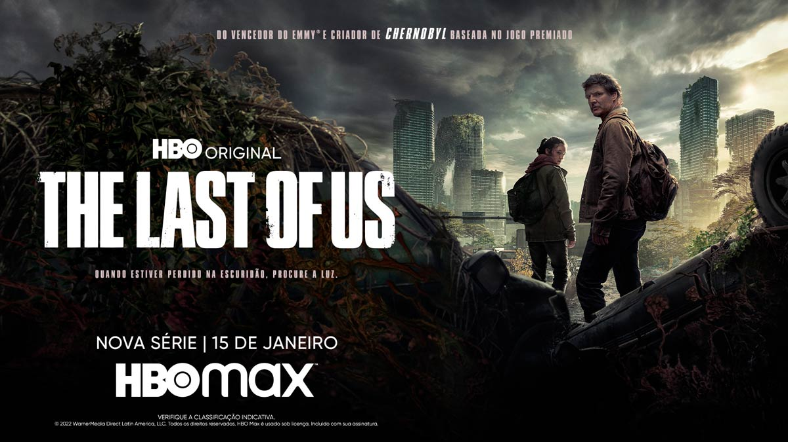
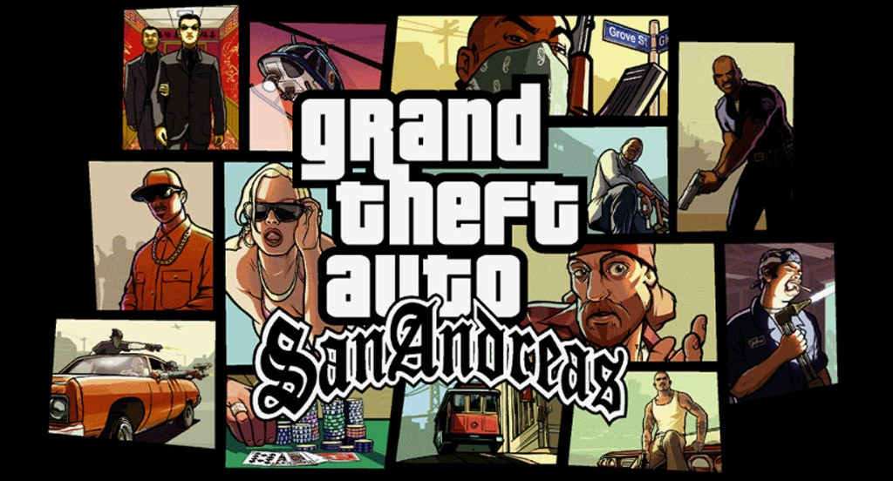
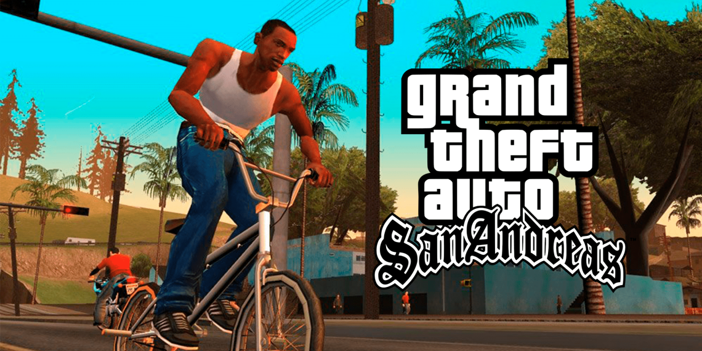
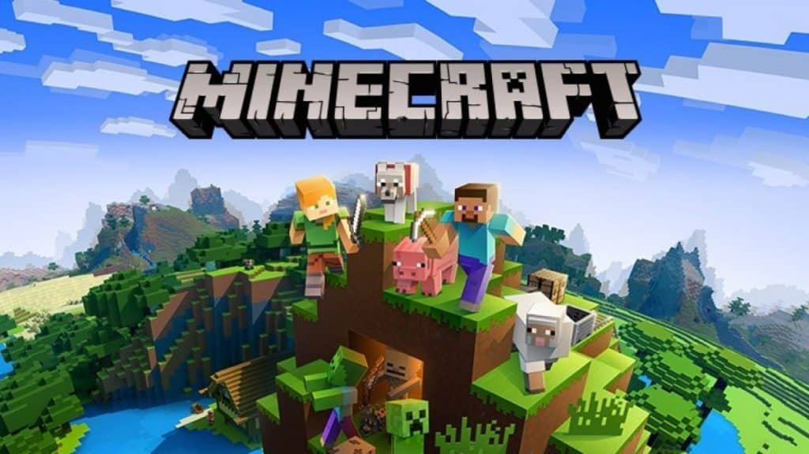
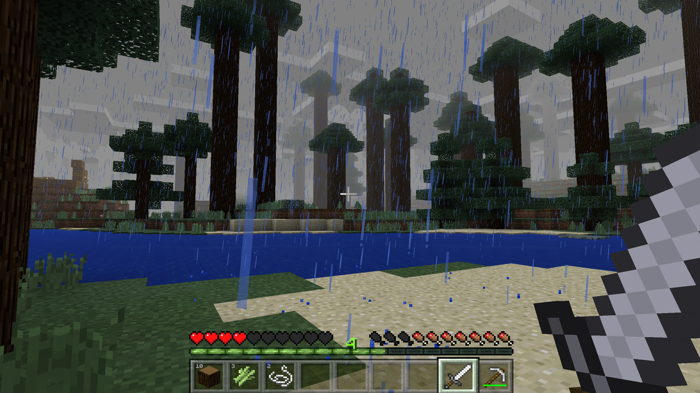
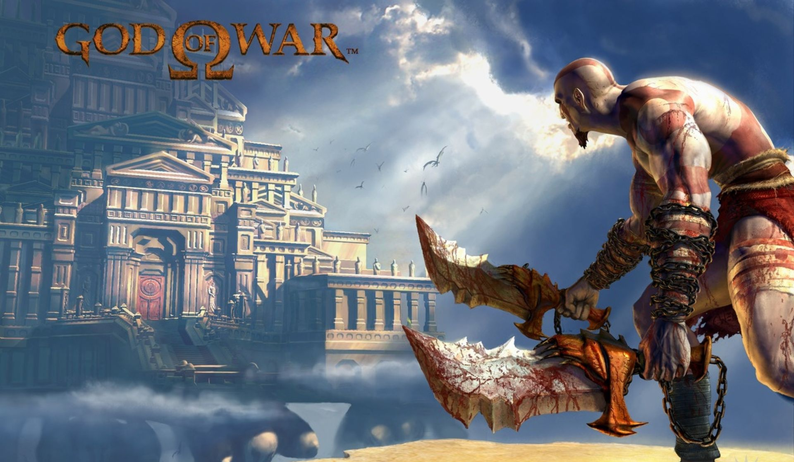
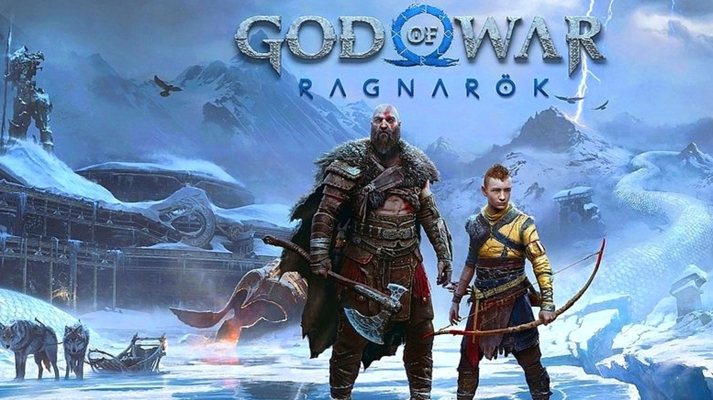

Lista dos 5 Melhores Jogos da Atualidade
The last of Us

Lançado originalmente para PlayStation 3 em 2013, The Last of Us conta a história de Joel (com voz de Troy Baker), um contrabandista que recebe a missão de levar Ellie (com voz de Ashley Johnson) de uma costa dos EUA à outra em meio à Terra pós-apocalíptica devastada por um fungo, cheia de infectados semelhantes a zumbis e facções perigosas. No processo, os dois acabam desenvolvendo uma relação como de pai e filha. Ambos marcados por perdas e traumas, eles precisam aprender a confiar um no outro para sobreviver, e ao longo do caminho são forçados a tomar decisões duras e nem sempre morais para conseguir isso.
Vale lembrar que o Jogo "The last of Us" deu origem a uma série na HBO Max e teve a melhor estreia da HBO Max na América Latina, superando “A Casa do Dragão” e a 2ª temporada de “Euphoria”.
GTA San Andreas
O jogo se passa no estado ficcional de San Andreas, com a história seguindo Carl "CJ" Johnson em sua luta para lidar com guerras de gangues, confrontos com policiais e as relações com sua família e amigos. O mundo aberto permite que os jogadores naveguem livremente pelas áreas rurais e urbanas de San Andreas.
Em uma metrópole futurista, o protagonista precisa trabalhar e enfrentar diferentes gangues, como a Máfia Russa e a Yakuza. Primeiro jogo da saga em 3D, GTA 3 foi lançado em 2001. Ambientado no amplo mundo aberto de Liberty City, o objetivo era se estabelecer como um dos líderes do crime.
Minecraft
O criador de Minecraft é o programador e designer sueco Markus "Notch" Persson, que levou apenas seis dias para criar tudo do zero. O projeto começou em 10 de maio, e no dia 16, ele já disponibilizou o projeto em fóruns. A ideia do jogo não é toda original e tem suas guias para as mecânicas e outros conceitos.
O principal objetivo do jogo é simplesmente construir. Você conta com uma série de ferramentas diferentes, que podem ser utilizadas tanto para coletar materiais quanto como armas. Ao coletar os blocos, o jogador tem a chance de utilizar seus recursos para construir o que bem entender.
Counter-Strike

Inicialmente criado como um "mod" de Half-Life para jogos online, foi desenvolvido por Minh Le e Jess Cliffe e depois adquirido pela Valve Corporation. Foi lançado em 1999, porém em 2000 ele começou a ser comercializado oficialmente, e posteriormente foram feitas versões para Xbox, Mac OS X e Linux.
Sem a pretensão de se tornar um grande sucesso, mas ao permitir que equipes de jogadores (ou clãs) entrassem em disputa, conseguiu alcançar um destaque que nem seus produtores poderiam prever.
A base de dados do Leetify revelou que, atualmente, o Counter-Strike conta com 14 milhões de jogadores.

God of War
Iniciada em 2005 no console PlayStation 2 (PS2), tornou-se carro-chefe para a marca PlayStation, consistindo em nove jogos em várias plataformas. Baseada em distintas mitologias, a história segue Kratos, um guerreiro espartano que foi levado a matar sua família por seu antigo mestre, o deus da guerra Ares.
Isso desencadeia uma série de eventos que levam à guerras com os panteões mitológicos. A era da mitologia grega da série mostra Kratos seguindo um caminho de vingança devido às maquinações dos deuses do Olimpo, enquanto a era da mitologia nórdica, que apresenta seu filho Atreus como protagonista secundário, mostra um Kratos mais velho em um caminho de redenção, o que inadvertidamente coloca os dois em conflito com os deuses nórdicos e em busca do impedimento do Ragnarök.
